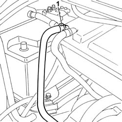
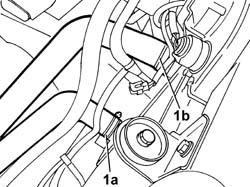
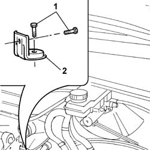
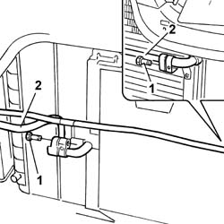
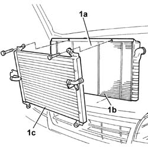
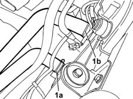
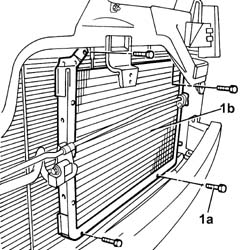
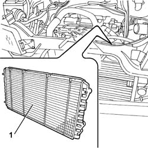

1088B24 ENGINE COOLING RADIATOR - R R FOR AIR CONDITIONED VERSIONS
- Path
- Procedures > 10 ENGINE UNIT > 1088 ENGINE COOLING > 1088B ENGINE COOLING TANK - R + R > 1088B24 ENGINE COOLING RADIATOR - R R FOR AIR CONDITIONED VERSIONS
- Kind
- repair procedure (removal / refitting; the operation number is the code)
- Applies to
- engines: 2.0 16V, 2.8 JTD 8V; all production periods
- Interactive page
- https://sloeber94.github.io/elrnDB-fDct/en/#/244000943
Applies to: engines: 2.8 JTD 8V; all production periods
 Removing
Removing
 Refitting
RefittingOp. 7055B54 UNDER-ENGINE GUARD - R R
Op. 0010T20 COOLANT CHECK DENSITY AND TOP UP IF NECESSARY
See in Op. 1048A21
See in Op. 1048B22
See in Op. 1048B14
Op. 1088E80 RADIATOR COOLING FAN/S WIRING BUNDLE - R R OR REPLACE
See in Op. 1048B50
Op. 0010T84 COOLANT FOR AIR CONDITIONING SYSTEM DEHYDRATE AND RECHARGE
1. Release the coolant recirculation pipe from the coolant tank.

Applies to: engines: 2.8 JTD 8V; all production periods
1. Open the bands securing the radiator upper hose (1a) and the lower hose (1b) and release them from the radiator.

Applies to: engines: 2.8 JTD 8V; all production periods
1. Undo the fixing bolts.
2. Remove the brackets fastening the radiator to the crossmember.

Applies to: engines: 2.8 JTD 8V; all production periods
1. Undo the bolts fixing the air conditioning pipes to the condenser.
2. Release the pipes from the condenser.

Applies to: engines: 2.8 JTD 8V; all production periods
- Release the radiator assembly with the condenser.
- At the bench.
1. Undo the fixing bolts (1a) and separate the radiator (1b) from the condenser (1c).

Applies to: engines: 2.8 JTD 8V; all production periods
Refitting
Removing- Fit the radiator to the condenser and tighten the fixing bolts.
- Fit the assembly in position.
- Connect the air conditioning pipes to the condenser tightening the fixing bolts.
- Position the brackets fastening the radiator to the crossmember and tighten the bolts.
- Connect the upper and lower hoses to the radiator and renew the securing bands.
- Connect the recirculation pipe to the coolant tank.
See in Op. 1048B50
Op. 1088E80 RADIATOR COOLING FAN/S WIRING BUNDLE - R R OR REPLACE
See in Op. 1048B14
See in Op. 1048B22
See in Op. 1048A21
Op. 7055B54 UNDER-ENGINE GUARD - R R
Op. 0010T20 COOLANT CHECK DENSITY AND TOP UP IF NECESSARY
Op. 0010T84 COOLANT FOR AIR CONDITIONING SYSTEM DEHYDRATE AND RECHARGE
Applies to: engines: 2.0 16V; all production periods
Removing
RefittingOp. 4450B12 FRONT OR REAR WHEELS (TWO) - R+R
Op. 7055B64 LH OR RH REFLECTOR(ONE) ON REAR BUMPERS - R R
- [both sides]
Op. 7055B54 UNDER-ENGINE GUARD - R R
See in Op. 1048A21
Op. 1088E16 LEFT ENGINE COOLING FAN OR FANS - R.R. FOR VERSIONS WITH AIR CONDITIONING
See in Op. 1088E20
Op. 1088E17 RIGHT ENGINE COOLING FAN - R.R. FOR VERSIONS WITH AIR CONDITIONING
- Position a suitable container for collecting the coolant.
1. Open the band (1a) and release the hose and open the band (1b) and release the hose.

Applies to: engines: 2.0 16V; all production periods
1. Undo the bolt fixing the radiator bracket.
2. Remove the radiator mounting brackets.
Applies to: engines: 2.0 16V; all production periods
1. Undo the bolts (1a) fixing the condenser (1b) and secure it appropriately.

Applies to: engines: 2.0 16V; all production periods
1. Release the radiator and remove it.

Applies to: engines: 2.0 16V; all production periods
Refitting
Removing- Place the radiator in position and fit the condenser using the fixing bolts.
- Fit the radiator mounting brackets and secure them.
- Fit the inlet and outlet hoses to the radiator and restore the fastening bands.
Op. 1088E17 RIGHT ENGINE COOLING FAN - R.R. FOR VERSIONS WITH AIR CONDITIONING
See in Op. 1088E20
Op. 1088E16 LEFT ENGINE COOLING FAN OR FANS - R.R. FOR VERSIONS WITH AIR CONDITIONING
See in Op. 1048A21
Op. 7055B54 UNDER-ENGINE GUARD - R R
Op. 7055B64 LH OR RH REFLECTOR(ONE) ON REAR BUMPERS - R R
- [both sides]
Topics linked from this page (9)
- 0010T20 COOLANT CHECK DENSITY AND TOP UP IF NECESSARY
- 0010T21 COOLANT CHECK DENSITY AND TOP UP IF NECESSARY
- 0010T84 COOLANT FOR AIR CONDITIONING SYSTEM DEHYDRATE AND RECHARGE
- 1088E16 LEFT ENGINE COOLING FAN OR FANS - R.R. FOR VERSIONS WITH AIR CONDITIONING
- 1088E17 RIGHT ENGINE COOLING FAN - R.R. FOR VERSIONS WITH AIR CONDITIONING
- 1088E80 RADIATOR COOLING FAN/S WIRING BUNDLE - R R OR REPLACE
- 4450B12 FRONT OR REAR WHEELS (TWO) - R+R
- 7055B54 UNDER-ENGINE GUARD - R R
- 7055B64 LH OR RH REFLECTOR(ONE) ON REAR BUMPERS - R R